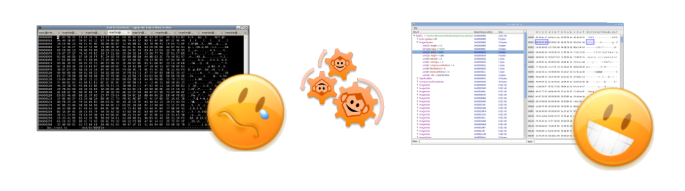

Hexamonkey
Paris Hackers #10
May, 21st 2014

- Martin Bonnin
- Sevan Drapeau-Martin
- hexamonkey.com
What is it for ?
- developer tool made by developers for developers
- a bit like ffmpeg but for analyzing data
- takes any file format description and outputs a hierarchical graphical description
- for an example, video files, game save data, elf files, complete filesystems, ...
- it is not for Mme Michu !

Other tools
- wireshark for network captures
- ASF viewer is very limited to ASF
- ASN1 compilers are not very user friendly and cannot describe arbitrary data
- there are a couple of good commercial MPEG2-TS analyzers but they are limited to TS (and not free)
- we are in 2014 and I am still using hexedit far too much !
In practice

Status
- Supported file formats
- mpeg4
- mpeg2-ts
- matrovska
- avi
- asf/wmw
- png
- jpeg
- gif
- zip
- sqlite
How it works
- new langage for describing data structures: HMScript
- core: the core module compiles hmscript into an internal representation
- frontend: the frontend module displays the internal representations
- steps:
- official specification, e.g. qtff.pdf
- hmscript, e.g. mp4.hm
- graphical output, e.g. hexamonkey
<Merci!>
- Martin Bonnin
- Sevan Drapeau-Martin
- hexamonkey.com